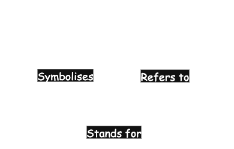
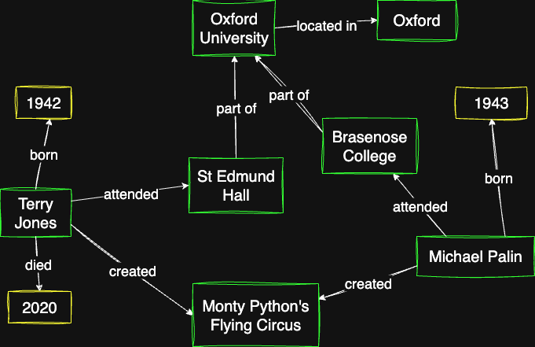
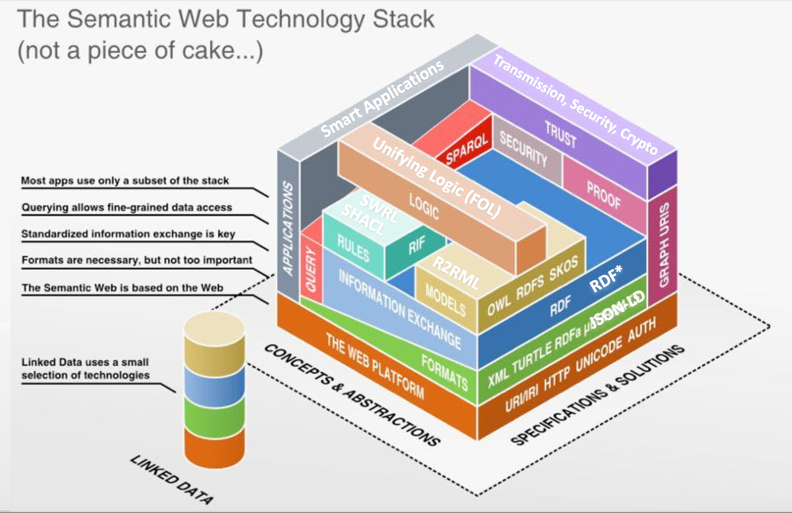
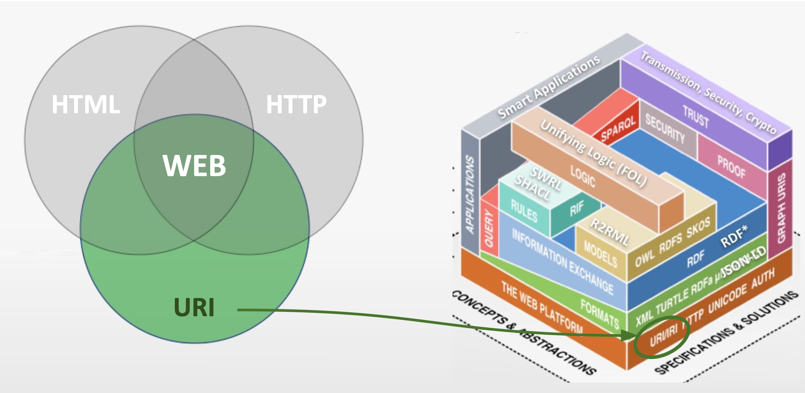
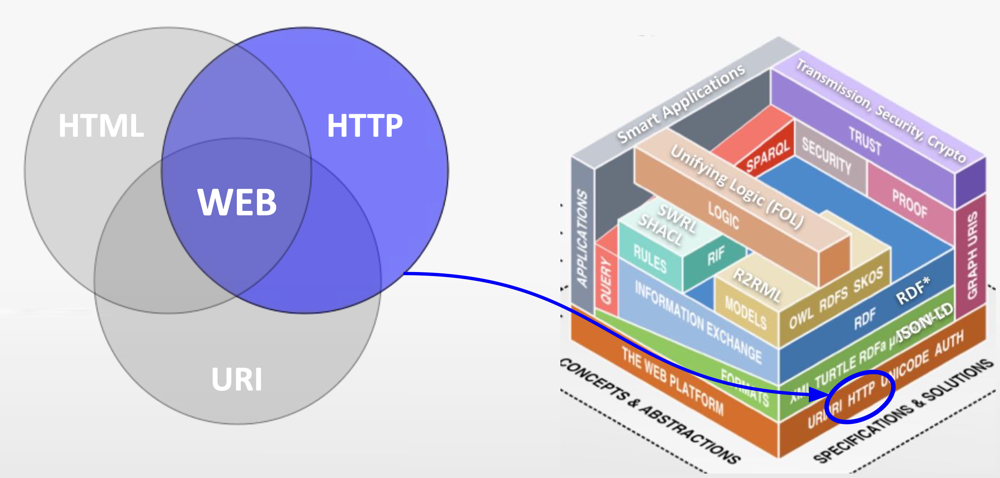
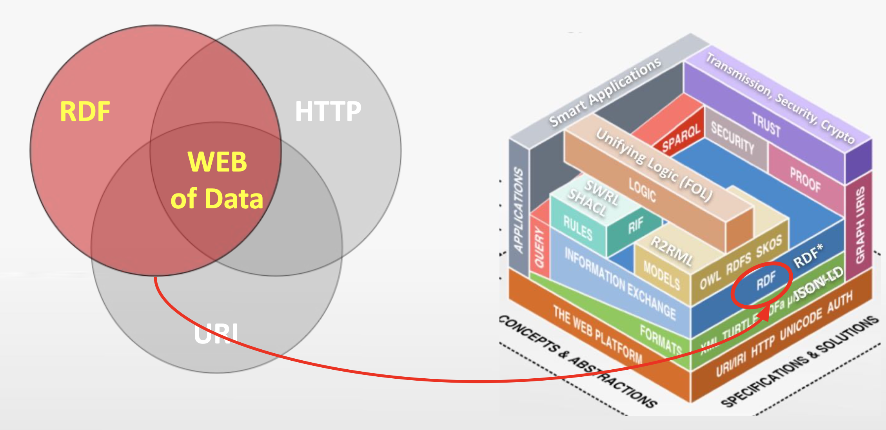

RDF Primer
An Introduction to Knowledge Representation with Graphs
XML Summer School - 15th September 2025
Rob Walpole
rob.walpole@devexe.co.uk
@rkw01
In this tutorial...
- Representing knowledge with graphs and triples
- Knowledge Graphs
- Identifying things with URIs
- Representing graphs and triples with RDF
- The Semantic Web
- Linked Data / The Web of Data
Representing knowledge with graphs and triples
What is knowledge?
What does it mean to understand?
An example..
DIKW example
- Data - the word "red"
- Information - "a red traffic light"
- Knowledge - "a red traffic light means stop"
- Wisdom - "don't drive through a red traffic light"
How do we represent knowledge?
Semiotic triangle
Formal knowledge representation
Context and Pragmatics
The triple
The graph
Entities and relations
Literals and classes
Knowledge Graphs
Information in a graph
What is a knowledge graph?
“A knowledge graph (i) mainly describes real world entities and their interrelations, organized in a graph, (ii) defines possible classes and relations of entities in a schema, (iii) allows for potentially interrelating arbitrary entities with each other and (iv) covers various topical domains.”
Information in a graph
Machine understanding
Explicit & Implicit Knowledge
Identifying things with URIs
What is this?
What is the difference?
Semiotic triangle
Uniform Resource Identifier
Uniform Resource Locator
URI for an apple?
What about this apple?
Language independent URIs
Designator and designatum
Content Negotiation
curl -L -H "Accept: text/html" http://wikidata.org/entity/Q89
curl -L -H "Accept: application/json" http://wikidata.org/entity/Q89
curl -L -H "Accept: text/turtle" http://wikidata.org/entity/Q89
Representing graphs and triples with RDF
subject → predicate → object
XML Schema datatypes
"Oxford"^^<http://www.w3.org/2001/XMLSchema#string>
"2025-09-14"^^<http://www.w3.org/2001/XMLSchema#date>
"true"^^<http://www.w3.org/2001/XMLSchema#booolean>
"42"^^<http://www.w3.org/2001/XMLSchema#integer>
Language
"University of Oxford"@en
"Universität Oxford"@de
"Universidad de Oxford"@es
Serialization formats
- N-triples (hard to read)
- RDF/XML (hard to read)
- Turtle Terse RDF Triple Language (easier to read)
- N-Quads
- RDFa
- JSON-LD
- Notation3
- HDT (binary)
N-Triples with URIs
<http://dbpedia.org/resource/St_Edmund_Hall,_Oxford>
<http://dbpedia.org/ontology/isPartOf>
<http://dbpedia.org/resource/University_of_Oxford> .
N-Triples with URIs and Literal
<http://dbpedia.org/resource/St_Edmund_Hall>
<http://dbpedia.org/ontology/isPartOf>
<http://dbpedia.org/resource/University_of_Oxford> .
<http://dbpedia.org/resource/St_Edmund_Hall,_Oxford>
<http://www.w3.org/2000/01/rdf-schema#label>
"St_Edmund_Hall"^^<http://www.w3.org/2001/XMLSchema#string> .
Turtle using prefixes
@prefix dbo: <http://dbpedia.org/ontology/> .
@prefix dbr: <http://dbpedia.org/resource/> .
@prefix rdfs: <http://www.w3.org/2000/01/rdf-schema#> .
@prefix xsd: <http://www.w3.org/2001/XMLSchema#> .
dbr:St_Edmund_Hall dbo:isPartOf dbr:University_of_Oxford .
dbr:St_Edmund_Hall rdfs:label "St Edmund Hall"^^xsd:string .
Turtle using predicate list
@prefix dbo: <http://dbpedia.org/ontology/> .
@prefix dbr: <http://dbpedia.org/resource/> .
@prefix rdfs: <http://www.w3.org/2000/01/rdf-schema#> .
@prefix xsd: <http://www.w3.org/2001/XMLSchema#> .
dbr:St_Edmund_Hall dbo:isPartOf dbr:University_of_Oxford ;
rdfs:label "St Edmund Hall"xsd:string .
Turtle using object list
@prefix dbo: <http://dbpedia.org/ontology/> .
@prefix dbr: <http://dbpedia.org/resource/> .
@prefix rdfs: <http://www.w3.org/2000/01/rdf-schema#> .
@prefix xsd: <http://www.w3.org/2001/XMLSchema#> .
dbr:St_Edmund_Hall dbo:isPartOf dbr:University_of_Oxford ;
rdfs:label "St Edmund Hall"@en ,
"Salle Saint-Edmond"@fr .
RDF Schema
Defining classes and instances
@prefix dbo: <http://dbpedia.org/ontology/> .
@prefix rdf: <http://www.w3.org/1999/02/22-rdf-syntax-ns#> .
dbo:University rdf:type rdf:Class .
dbo:University rdfs:subClassOf dbo:EducationalInstitution .
dbr:University_of_Oxford rdf:type dbo:University .
Defining properties
@prefix dbo: <http://dbpedia.org/ontology/> .
@prefix rdf: <http://www.w3.org/1999/02/22-rdf-syntax-ns#> .
dbo:district rdf:type rdf:Property ;
rdfs:domain dbo:Place ;
rdfs:label "district"@en ;
rdfs:range dbo:PopulatedPlace
rdfs:subPropertyOf dbo:isPartOf .
Other things to note
- Classes start with uppercase
- Properties start with lowercase
- rdf:type can be abbreviate as 'a'
@prefix dbo: <http://dbpedia.org/ontology/> .
@prefix rdf: <http://www.w3.org/1999/02/22-rdf-syntax-ns#> .
dbo:University a rdf:Class .
dbo:University rdfs:subClassOf dbo:EducationalInstitution .
dbr:University_of_Oxford a dbo:University .
Other RDF Features
- Blank nodes (bnode) - anonymous resources
- Collections and containers (Bag, Sequence, List)
- Reification - making statements about statements
The Semantic Web
Semantic Web Technology Stack
The Semantic Web
Linked Data / The Web of Data
What is the Web of Data?
"The web of human-readable document is being merged with a web of machine understandable data. The potential of the mixture of humans and machines working together and communication through the web could be immense."
Basic Architecture of the Web of Documents
- Address (URL)
- Communication (HTTP)
- Representation (HTML)
Basic Architecture of the Web of Data: URI
Basic Architecture of the Web of Data: HTTP
Basic Architecture of the Web of Data: RDF
How do we access the Web of Data?
How do we find data on the Web of Data?
Linked Data Principles
- Use URIs as names for things.
- Use HTTP URIs so that people can look up those names.
- When someone looks up a URI, provide useful information, using the standards (RDF, SPARQL).
- Include links to other URIs, so that they can discover more things.
5 star linked open data
- ⭐ Available on the web (whatever format) but with an open licence, to be Open Data
- ⭐ Available as machine-readable structured data (e.g. excel instead of image scan of a table)
- ⭐ as (2) plus non-proprietary format (e.g. CSV instead of excel)
- ⭐ All the above plus, Use open standards from W3C (RDF and SPARQL) to identify things, so that people can point at your stuff
- ⭐ All the above, plus: link your data to other people’s data to provide context
FAIR Principles
- Findable
- Accessible
- Interoperable
- Reusable
FAIR Principles
The principles emphasise machine actionability ... because humans increasingly rely on computational support to deal with data as a result of the increase in volume, complexity, and creation speed of data.
Recap...
- Representing knowledge with graphs and triples
- Knowledge Graphs
- Identifying things with URIs
- Representing graphs and triples with RDF
- The Semantic Web
- Linked Data / The Web of Data